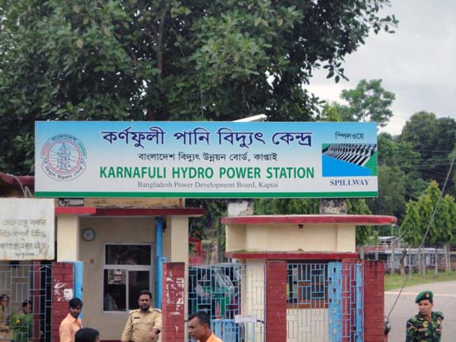

Kaptai Lake Rangamati is One of The Most Beautiful Lakes in The World
Kaptai Lake is the largest lake in Bangladesh.[1] It is located in the Kaptai Upazila under Rangamati District of Chittagong Division. The lake was created as a result of building the Kaptai Dam on the Karnaphuli River, as part of the Karnaphuli Hydro-electric project. The Kaptai Lake's average depth is 100 feet (30 m) and maximum depth is 490 feet (150 m).
Continue Reading

Kaptai Hydro Power Plant
Karnafuli Hydropower Station the only hydropower plant in the country is located at kaptai, about 50 km from the port city of chittagong. This plant was constructed in 1962 as part of the 'Karnafuli Multipurpose Project', and is one of the biggest water resources development project of Bangladesh.
After being commissioned in 1962, the plant could feed the national grid with 80 MW of electricity. In later years, the generation capacity was increased in two phases to a total of 230 MW. The plant not only plays an important role in meeting the power demand of the country but is also vital as a flood management installation for the areas downstream...
Continue Reading